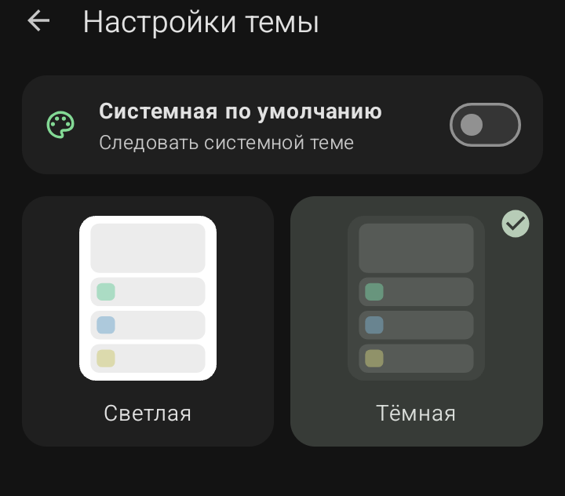

Настройки темы (Оформление)

Этот раздел отвечает за внешний вид самого приложения Sketchware Pro.
·
Системная по умолчанию:
Приложение будет автоматически переключаться между светлой и темной темой в зависимости от настроек вашего телефона.
·
Светлая:
Принудительно включает светлую тему оформления.
·
Тёмная:
Принудительно включает темную тему оформления (удобна для работы в темное время суток).